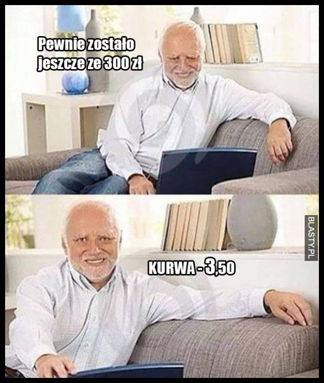
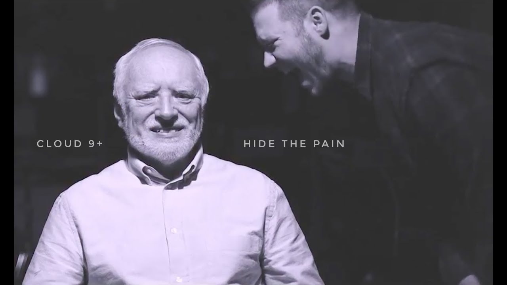

András jest węgierskim inżynierem zamieszkałym w Budapeszcie. Jest żonaty i ma syna. Po przejściu na emeryturę został dostrzeżony przez fotografa, który zaproponował przyszłemu Haroldowi sesję zdjęciową przedstawiającą różne zawody typu stolarz, czy prawnik.
Po paru miesiącach András odkrył, że w sieci pojawiło się sporo śmiesznych obrazków z jego podobizną.
Z początku nie spodobało się to Panu Arató, że ktoś wykorzystuje jego wizerunek do śmiesznych a czasem nawet skrajnie niestosownych obrazków. Miał cichą nadzieję, że internauci zapomną o nim i słuch po Haroldzie zniknie. Tak się jednak nie stało.
Po pewnym czasie András zaakceptował fakt, że figuruje w sieci jako Harold Hide the Pain i zaczął
wykorzystywać to na swoją korzyść. Zaczął występować publicznie na festiwalach, konferencjach i w reklamach.
Dzięki swojej rozpoznawalności przez pięć lat pracował jako DJ w lokalnej rozgłośni radiowej, a w 2019 został
twarzą kampanii reklamowej Coca-cola na Węgrzech.
Warto również wspomnieć, że dzięki swojej rozpoznawalności wystąpił w teledysku grupy Cloud 9+ do utworu zatytuowanego Hide the Pain
